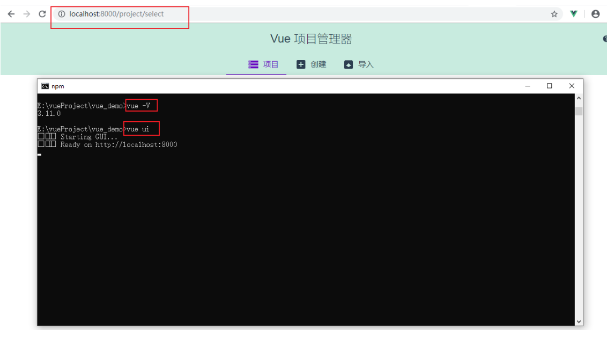
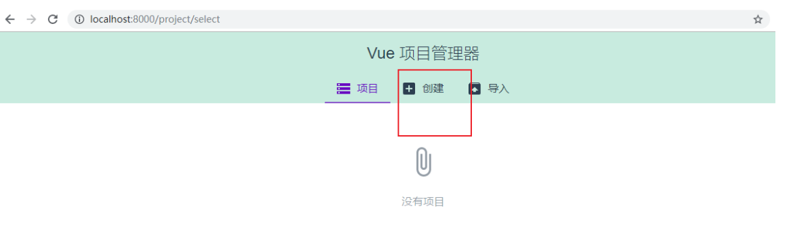
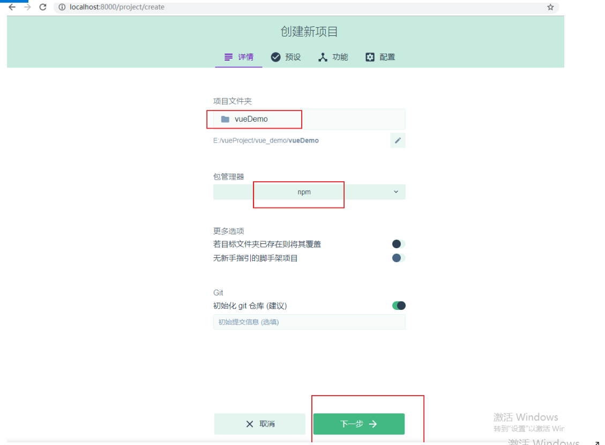
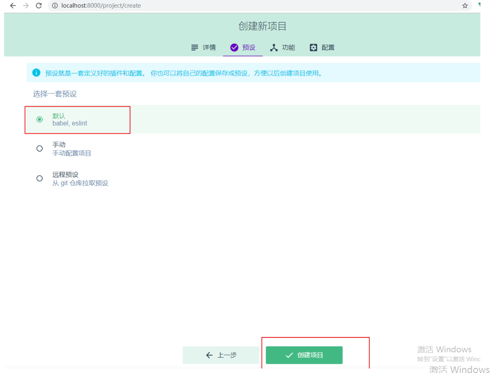
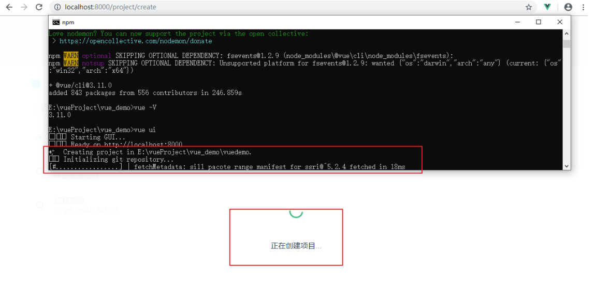
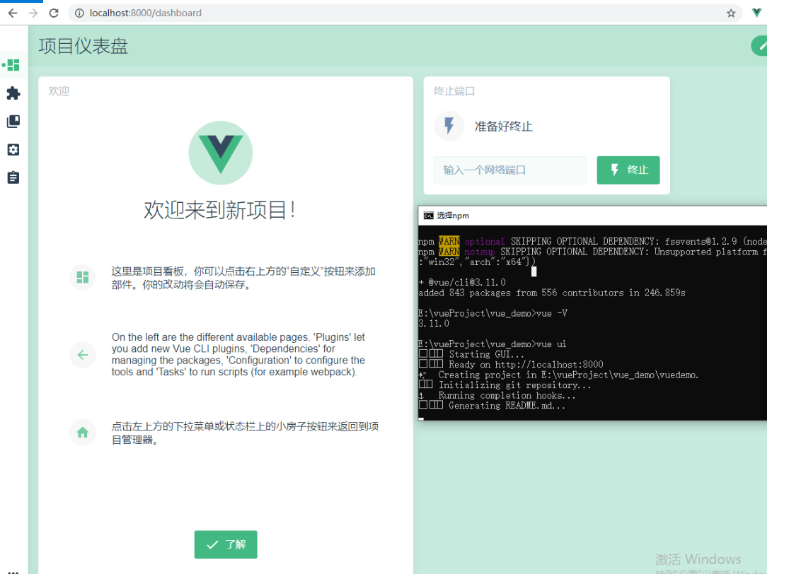
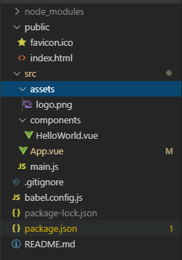
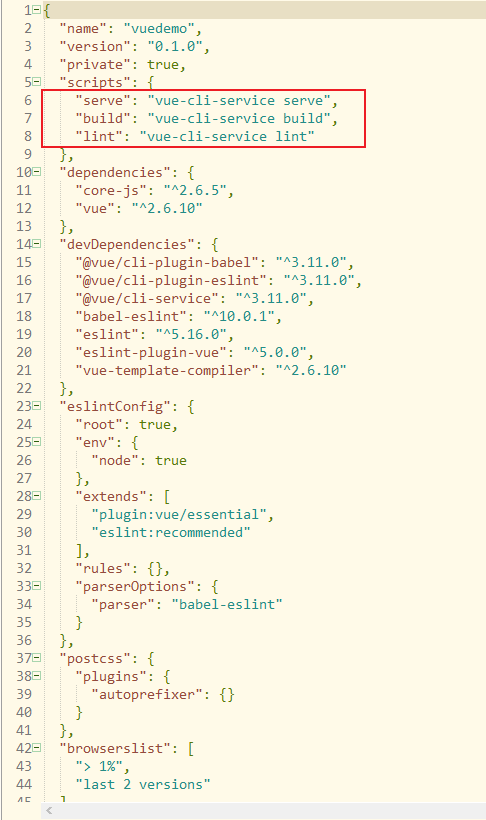
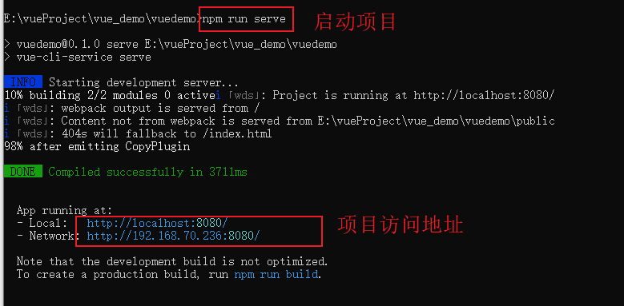
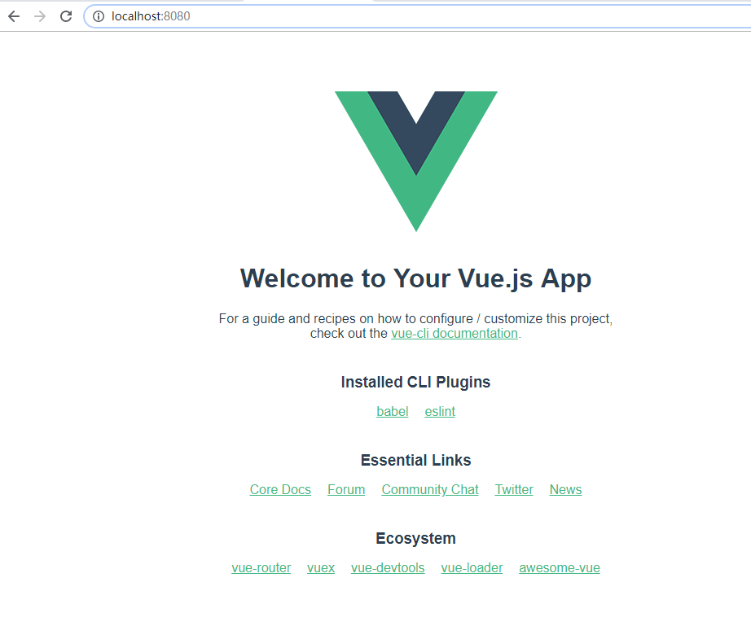

是vue官方提供的脚手架工具。脚手架工具简单讲就是自动将项目需要的环境、依赖等信息都配置好。
（1）检查npm 版本，建议安装到最新版本。
【命令行查看版本号】
node -v
npm -v【升级npm（可选操作）】
npm install -g npm
【修改为淘宝镜像（可选操作）】
npm config set registry "https://registry.npm.taobao.org"
（2）安装
【全局安装 webpack】
npm install webpack -g
【webpack 4.X 开始，需要安装 webpack-cli 依赖】
npm install webpack webpack-cli -g
【查看版本号】
webpack -v
【全局安装vue-cli】
npm install -g vue-cli
【查看版本号】
vue -V 注：
若出现“Unexpected end of JSON input while parsing near”错误，
命令行输入： npm cache clean --force
（1）创建一个文件保存的路径。比如：E:\vue\vue-demo
【命令行进入该目录】
cd E:\vue\vue-demo
【下载模板】
vue init webpack vue-demo
【进入交互页面，根据自己情况选择】
?Project name vue-demo # 项目名称，直接回车，按照括号中默认名字（注意这里的名字不能有大写字母，如果有会报错Sorry, name can no longer contain capital letters）。
? Project description A Vue.js project # 项目描述,随便写
? Author # 作者名称
? Vue build standalone # 我选择的运行加编译时
Runtime + Compiler: recommended for most users
? Install vue-router? Yes # 是否需要 vue-router
? Use ESLint to lint your code? Yes # 是否使用 ESLint 作为代码规范.
? Pick an ESLint preset Standard # 一样的ESlint 相关
? Set up unit tests Yes # 是否安装单元测试
? Pick a test runner 按需选择 # 测试模块
? Setup e2e tests with Nightwatch? 安装选择 # e2e 测试
? Should we run `npm install` for you after the project has been created? (recommended) npm # 包管理器，我选的NPM（2）安装成功后，进入项目目录
【命令行进入该目录】
cd E:\vue\vue-demo
【初始化项目】
npm install
【启动项目，根据package.json中的数据来启动】
npm run serve
【关闭项目】
Ctrl + C
【浏览器访问：】
http://localhost:8080/
【项目打包上线】
npm run build
将打包后生成的dist 目录中的文件拷贝到服务器的相应地址即可（比如tomcat的webapps目录下）。注：
如果浏览器打开之后，没有加载出页面，有可能是本地的 8080 端口被占用，需要修改一下配置文件 config里的index.js的 post
（3）若想使用vue的UI界面来创建项目，需将xue升级到 3.0以上的版本。
【下载vue最新版】
npm i -g @vue/cli
【打开ui界面】
vue ui
点击创建项目

填写项目名（尽量小写，大写会自动转为小写），选择npm或其他包管理器。

选择默认即可。

等待创建项目。命令行会自动执行创建操作。

创建完毕。

其余操作同上，此处不再重复。
项目文件结构如下：

查看package.json，
可以使用npm run serve 来启动项目、或npm run build 来打包项目。


运行起来后，
